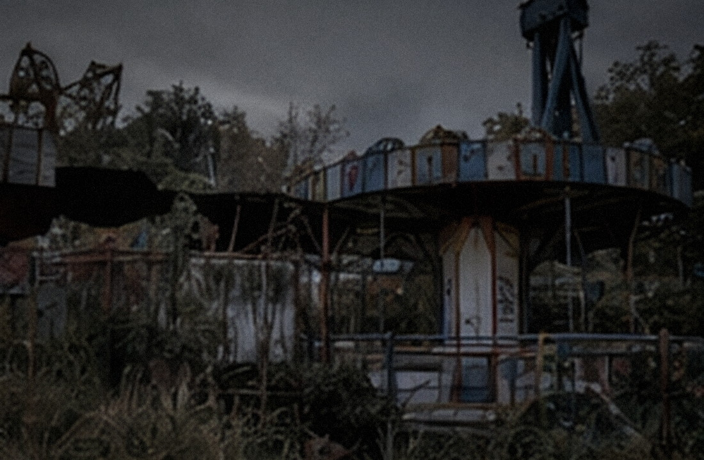

春灯游乐园旧址拆除及公共空间更新项目
项目状态分区拆除 / C区暂停
施工单位澄海城建工程有限公司
现场监理市政更新项目组
最近更新2026-09-20 08:40
现场提示：C区历史结构核查期间暂停机械拆除，其余分区按原计划施工。未经许可人员不得进入围挡区域。
| 建设内容 | 旧游客中心、中心广场、魔镜宫及后场设备区拆除；后续进行公共空间更新。 |
|---|---|
| 历史资料核验 | 施工前对照1999原始建筑总图、2003竣工资料与2006消防备案图。 |
| 施工原则 | 先探查、后拆除；遇未标注结构或遗留物立即停工并记录坐标。 |

项目范围包括原春灯游乐园游客中心、中心广场、魔镜宫及后场设备区。由于园区停用时间较长，现场存在结构老化、积水和图纸缺失等情况，施工单位在拆除前先进行分区探查。
9月18日，施工人员清理魔镜宫后侧墙体时发现原图纸未标出的高位夹层，现场随即停工并报告公安机关。该夹层与2006年沈荞失踪案有关，后续调查与物证处置由警方负责。